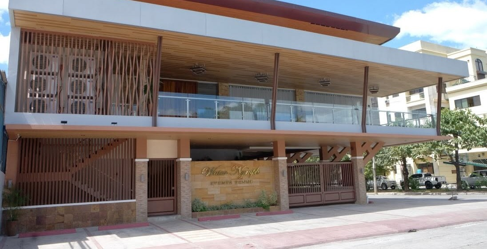

Attire
The lineup
Choose an option on the right and the figures update. The bride, groom, bridesmaids, groomsmen, ninangs and ninongs are already set. Everything else is a suggestion, and the one marked "Our pick" is where I'd start. "See photos" opens real outfit references on Pinterest.
Groom's tux
You chose midnight navy. It stands out next to the black-tux groomsmen and ties into the dusty blue. The other options stay here for comparison.
Your bow tie & pocket square
Groomsmen's bow ties
The black tux stays. A dusty blue bow tie links the groomsmen to the bridesmaids when they walk in pairs.
Principal sponsors
You chose champagne and gold for the ninangs, worn as a Filipiniana or terno with butterfly sleeves, and the barong tagalog for the ninongs. The ninangs will read as one group in photos, separate from the entourage and the guests. The other options stay here for comparison.
Ninongs wear
Guests
Guests should look different from the wedding party. The new palettes avoid the colors worn by you, Tine, the groomsmen, the bridesmaids and the ninangs. If a guest color comes too close to one of them, a warning appears.
See the guest dress code card ↓For your guests
Guest dress code
This card follows the guest palette you pick above. Screenshot it for the invitation group chat, or copy the text.
Your picks
Reception · Water Nymph Resort, Events Venue · 4:00 PM
Reception design
Three directions built on your dusty blue and gold. Switch between them to see the table, the color split and the details.

Working with the venue
The building already has warm wood slats and stone, so gold accents and warm lighting will sit well with it.
Sunset is around 6 PM, so the reception starts in daylight and ends at night. Plan decor that works in both.
Before booking a stylist, ask the venue about ceiling height, wall color, and whether drapery, open-flame candles and string lights are allowed.
See photos of this look ↗How guests move through the room
- EntranceWelcome sign and floral arrangement, so the first photo of the night is on-theme.
- Registry & photo wallSeating chart, guest book and a backdrop for photos while guests wait between the 2 PM ceremony and 4 PM reception.
- Guest tablesArranged around the dance floor, ninongs and ninangs and family closest to the front.
- Stage & couple's tableFacing the entrance, so every guest sees you when they walk in.
- Cake & sweetsBeside the stage, so the cake ends up in the background of your program photos.
From the web
Inspiration
Real weddings, guides and ideas to look through together. Each link shows a preview photo from the article where one was available, or a palette of the colors it describes. Links open in a new tab.